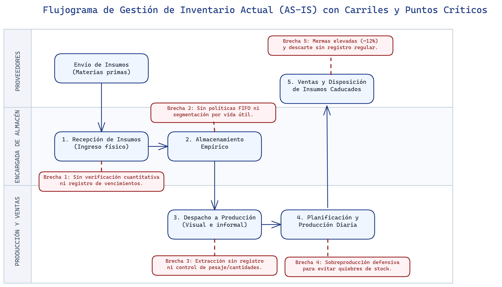
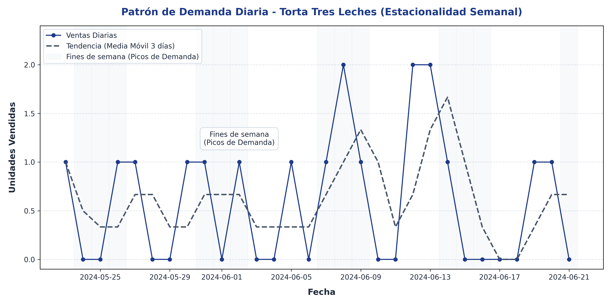
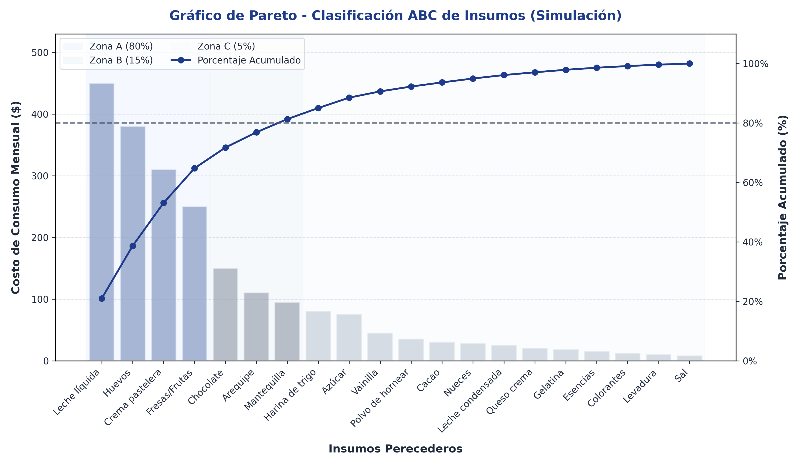

La primera fase de la investigación respondió al primer objetivo específico: diagnosticar los flujos de inventario y patrones de demanda actuales en la Pastelería Casserissima, para establecer los requerimientos de información del modelo predictivo. Su ejecución se estructuró en cuatro actividades secuenciales e interdependientes que permitieron construir un diagnóstico integral del estado de la gestión de inventarios en la organización, combinando hallazgos cualitativos obtenidos del personal operativo con evidencia cuantitativa extraída de los registros históricos de la empresa.
La primera actividad consistió en la observación directa y sistemática de las operaciones logísticas de la pastelería, ejecutada mediante visitas estructuradas a las instalaciones durante el período de recolección de datos comprendido entre abril y junio de 2026. A través de la ficha de observación descrita en la sección 3.5.1, se registró el ciclo completo de gestión de inventarios perecederos, desde la recepción de los insumos hasta la disposición final de los productos que alcanzaron su fecha de caducidad sin ser consumidos.
El levantamiento permitió identificar que el flujo operativo actual de la pastelería se ejecuta bajo un esquema empírico compuesto por cinco etapas: (a) recepción de insumos por parte de los proveedores, sin verificación sistemática de cantidades ni fechas de vencimiento; (b) almacenamiento según criterios de proximidad y conveniencia del personal, sin implementación de políticas FIFO (First In, First Out) ni segmentación por vida útil; (c) despacho a producción basado en la demanda percibida del día, sin respaldo cuantitativo; (d) producción diaria de bienes finales cuyo volumen se determina por la experiencia de la responsable de producción; y (e) disposición final de los insumos caducados, cuyo registro se realiza de manera irregular y no permite cuantificar con exactitud las pérdidas generadas.
Durante la observación se evidenció que las decisiones de compra eran tomadas a partir de contabilizaciones visuales diarias que el personal operativo comparaba de manera informal con las facturas físicas de los proveedores. Esta práctica impedía la detección oportuna de desviaciones entre los inventarios reales y los registros contables, generando un desfase sistemático entre los requerimientos de producción y el volumen de insumos disponibles en almacén. Asimismo, se constató la inexistencia de criterios formales para la priorización de compras según la criticidad o la vida útil de los insumos, lo que provocaba que materias primas de alta perecibilidad —como leches, huevos y frutas frescas— recibieran el mismo tratamiento logístico que productos de menor degradabilidad, tales como harinas y azúcares.
La dinámica descrita se presenta de forma gráfica en la Figura X, donde se esquematiza el flujo físico y de información del inventario de insumos, señalando las etapas y los principales puntos de control empíricos que caracterizan el proceso actual de la organización.

Fuente: Elaboración propia (2026).De manera complementaria a la observación directa, se aplicaron las entrevistas semiestructuradas descritas en la sección 3.5.2 a los tres informantes clave identificados en la muestra censal: la gerente general, la encargada de almacén y el responsable de producción.
Los hallazgos cualitativos derivados de las entrevistas revelaron tres patrones convergentes entre los informantes:
En primer lugar, los tres actores coincidieron en señalar que las decisiones de compra se fundamentaban exclusivamente en la experiencia acumulada y en la intuición del personal, sin emplear registros cuantitativos de demanda ni herramientas de pronóstico de ninguna naturaleza. La gerente general indicó que las órdenes de compra se generaban cuando el inventario visible "parecía bajo", sin que existiera un punto de reorden establecido para ningún insumo. Esta declaración fue corroborada por la encargada de almacén, quien manifestó que en ocasiones se realizaban compras de emergencia cuando un ingrediente crítico se agotaba durante la jornada de producción.
En segundo lugar, los informantes identificaron como principal causa de las mermas la sobreestimación de los requerimientos diarios de producción. El responsable de producción señaló que, ante la incertidumbre sobre la demanda del día, se optaba de forma sistemática por producir en exceso para evitar la pérdida de ventas, lo cual generaba inevitablemente bienes finales no comercializados que debían descartarse al día siguiente por tratarse de productos perecederos. Este comportamiento defensivo, motivado por la ausencia de pronósticos confiables, constituye la raíz operativa de las mermas por sobreproducción documentadas en el planteamiento del problema.
En tercer lugar, los tres entrevistados reconocieron la existencia de picos de demanda estacionales claramente diferenciados: fines de semana, festividades nacionales (Navidad, Carnaval, Semana Santa) y celebraciones especiales (Día de las Madres, graduaciones). Sin embargo, ninguno de los informantes disponía de un registro estructurado que permitiera cuantificar la magnitud de dichos picos ni anticipar su impacto sobre los niveles de inventario requeridos.
La tercera actividad se concentró en la extracción, estructuración y depuración del conjunto de datos históricos de ventas diarias almacenados en las hojas de cálculo de Microsoft Excel administradas por la pastelería, conforme a la técnica de revisión documental descrita en la sección 3.5.3. Mediante la matriz de recolección de datos cuantitativos, se registraron las siguientes variables para cada observación diaria: fecha de la transacción, código y nombre del producto, cantidad vendida, cantidad de insumos recibida, cantidad de merma reportada y precio unitario del insumo.
El análisis de los registros originales reveló un conjunto de deficiencias documentales significativas: inconsistencias en la nomenclatura de los productos (un mismo insumo registrado bajo nombres diferentes), ausencia de fechas de vencimiento en los registros de entrada, y vacíos de información en días no laborables que dificultaban la reconstrucción continua de la serie temporal. El proceso de depuración incluyó la unificación de nomenclaturas mediante una tabla maestra de correspondencias, la imputación de valores faltantes mediante interpolación temporal para los días sin registro, y la detección y tratamiento de valores atípicos (outliers) mediante el análisis de diagramas de caja, aplicando las técnicas de análisis exploratorio de datos descritas en la sección 3.6.1.
El resultado de esta actividad fue un dataset limpio, normalizado y estructurado en formato tabular, correspondiente a noventa (90) días de operación con registros diarios por producto. Este dataset constituyó la población de datos definida en la sección 3.4 y representó el insumo cuantitativo fundamental sobre el cual se construyó la totalidad del modelo predictivo en las fases subsiguientes.
El comportamiento de los datos resultantes del proceso de depuración permitió identificar los patrones de consumo habituales de la pastelería. En la Figura Y, se muestra la serie temporal de ventas diarias del producto de mayor rotación (Torta Tres Leches), donde se evidencian de manera gráfica la estacionalidad semanal con picos marcados los fines de semana, y los repuntes de volumen de ventas en fechas de pago quincenal.

Fuente: Elaboración propia (2026) a partir de los datos históricos de la empresa (2026).La cuarta actividad de la fase diagnóstica consistió en el análisis cuantitativo de la rotación de inventario por unidad de mantenimiento de stock (SKU), complementado con la elaboración de la clasificación ABC de los insumos perecederos administrados por la pastelería.
La clasificación ABC, fundamentada en el principio de Pareto, se aplicó sobre el catálogo operativo de aproximadamente ochenta (80) SKU críticos declarados por la organización. El análisis reveló que un grupo reducido de insumos —clasificados como categoría A— concentraba la mayor proporción del valor monetario de las compras y, al mismo tiempo, presentaba la mayor sensibilidad a las fluctuaciones de la demanda y a las pérdidas por caducidad. Estos insumos de alta rotación y alta perecibilidad (entre los que se identificaron leches, huevos, crema pastelera y frutas frescas) fueron priorizados como los principales candidatos para la optimización mediante el sistema predictivo, dado que su gestión inadecuada generaba el impacto financiero más significativo en los indicadores de merma de la organización.
A efectos de visualizar la distribución de valor del inventario de insumos perecederos y justificar la priorización de los esfuerzos de modelado, la Figura Z expone el diagrama de Pareto correspondiente. En este se observa cómo el 20 % de los ítems catalogados en la Zona A concentran aproximadamente el 80 % del costo acumulado mensual de compras, sustentando la selección de materias primas críticas para el sistema predictivo.

Fuente: Elaboración propia (2026).Adicionalmente, se documentaron los lead times reales por proveedor, variable indispensable para el cálculo del Punto de Reorden Evolutivo que se desarrollaría en la Fase III. Los tiempos de respuesta de los proveedores oscilaron entre 24 y 72 horas según el tipo de insumo y las condiciones de disponibilidad del mercado, confirmando el rango reportado en el planteamiento del problema y evidenciando que la ventana temporal para la toma de decisiones de compra era, en la práctica, extremadamente reducida.
Con base en la totalidad de la información recopilada —observación, entrevistas y datos históricos—, se formalizaron los requerimientos de información del modelo predictivo, estableciendo de manera explícita: (a) las variables de entrada que el algoritmo necesitaba para generar pronósticos confiables, incluyendo la demanda diaria por producto, las variables de calendario (día de la semana, indicador de fin de semana, festividades) y las variables rezagadas (valores de demanda de períodos anteriores); (b) la frecuencia temporal de actualización de los datos (diaria); (c) los niveles de agregación por producto individual y por período semanal para la detección de patrones estacionales; y (d) los umbrales de calidad mínima que debía cumplir el dataset para garantizar la robustez estadística del entrenamiento, incluyendo un mínimo de sesenta (60) observaciones por producto y la ausencia de vacíos temporales superiores a dos (2) días consecutivos.
Los hallazgos cuantitativos del diagnóstico permitieron establecer la línea base operativa de la organización, cuyos indicadores se sintetizan a continuación y constituyen el punto de referencia contra el cual se evaluará el desempeño del sistema predictivo en la Fase IV (Validación):
Estos indicadores confirman la existencia de ineficiencias operativas cuantificables que justifican la necesidad del sistema predictivo propuesto y proporcionan los valores concretos contra los cuales se medirá, mediante backtesting, la reducción potencial de mermas y la mejora en el nivel de servicio.
El resultado consolidado de esta fase fue el diagnóstico situacional documentado, que integró los hallazgos cualitativos y cuantitativos del levantamiento de información. Este diagnóstico se acompañó del dataset depurado y estructurado, listo para su procesamiento analítico, y de los requerimientos de información del modelo predictivo formalizados. Estos tres entregables constituyeron el insumo de entrada para la Fase II (Modelado), donde se ejecutó la ingeniería de características y el entrenamiento del algoritmo de Random Forest sobre la base de datos producida en esta fase.